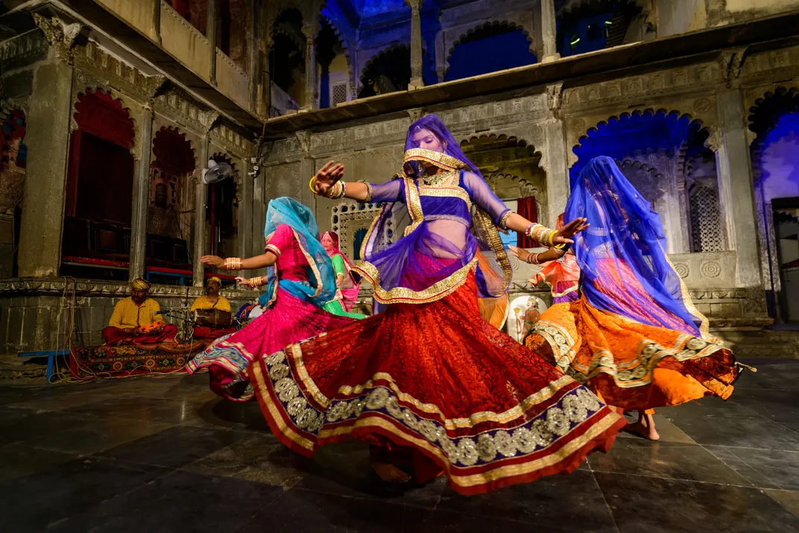
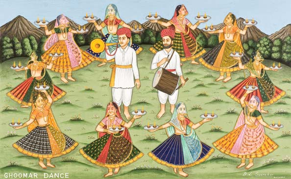
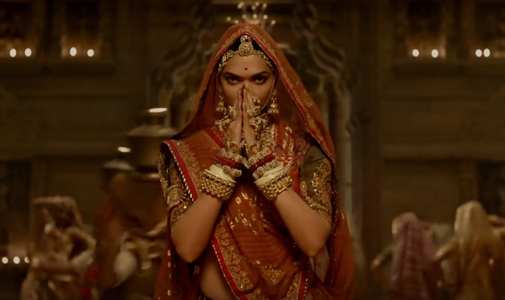
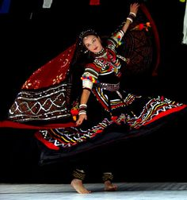
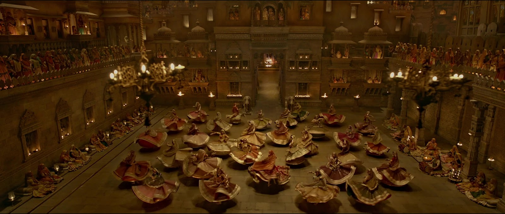

Ghoomar or ghumar is a traditional folk dance of Rajasthan. It was the Bhil tribe who performed it to worship Goddess Saraswati which was later embraced by Rajputs.The dance is chiefly performed by veiled women who wear flowing dresses called ghaghara.The dance typically involves performers pirouetting while moving in and out of a wide circle. The word ghoomna describes the twirling movement of the dancers and is the basis of the word ghoomar. According to the traditional rituals, newly married bride is expected to dance ghoomar on being welcomed to her new marital home.Ghoomar is often performed on special occasions, such as at weddings, festivals and religious occasions, which sometimes lasts for hours.

Ghoomar is of Bhil tribe performed to worship goddess Sarasvati which was later embraced by other Rajasthani communities. Bheels were a strong community at that time and were in constant war with Rajput kings. After much fighting peace was made and they began interacting with each other. Ghoomar was performed at Rajputana by local women, later on Rajput elite women also started participating in the dance. Men were not allowed at these dance performances. Ghoomar became popular in the Indian state of Rajasthan during the reigns of Rajput kings, and is typically performed by women during auspicious occasions. Women perform ghoomar with ghoonghat on their head covering their face. The dance form acquires different style and slight change in attire with the different regions of Rajasthan. Ghoomar is performed with faster beats in areas adjoining Gujarat, steps similar to garba style, while slower beats in Dhaulpur Karauli Braj kshetra, similarly difference in attire and dancing style can be seen in Udaipur, Kota, Bundi etc.

Jewellery plays a crucial role in completing the Ghoomar dance costume.Dancers wear traditional Rajasthani jewelry including:
Borla: A traditional forehead ornament that dangles elegantly.
Necklaces: Multiple layers including hansli (choker) and longer necklaces.
Bangles: Colorful glass bangles and metal kadas worn on both arms.
Anklets (Payal): Silver anklets that create rhythmic sounds during dance.
Nose Ring (Nath): A traditional ornament symbolizing grace and beauty.
Earrings (Jhumkas): Large, ornate earrings that complement the overall look.

The traditional costume worn during Ghoomar performances is a visual spectacle that embodies the vibrant colors and rich textile heritage of Rajasthan. Female dancers adorn themselves in traditional Rajasthani attire consisting of a ghagra (long, flowing skirt), choli (fitted blouse), and odhni (veil). These garments are typically made from silk, cotton, or georgette fabrics and feature intricate mirror work, embroidery, and colorful patterns that reflect the desert landscape and cultural aesthetics of Rajasthan.The ghagra is the most distinctive element of the Ghoomar costume, often measuring up to 15 meters in circumference. The voluminous skirt creates dramatic visual effects when dancers perform their signature spinning movements. Traditional colors include vibrant shades of red, orange, yellow, pink, and green, often adorned with gold or silver embellishments. The odhni, draped gracefully over the head and shoulders, adds an element of modesty and elegance to the overall appearance.

